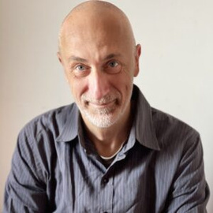
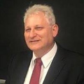
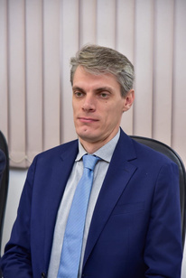
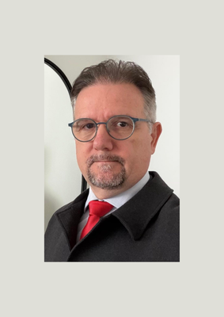
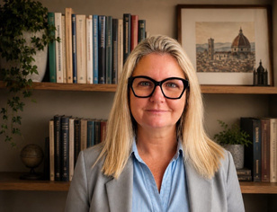
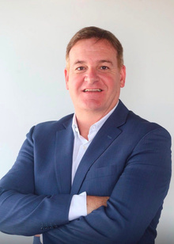
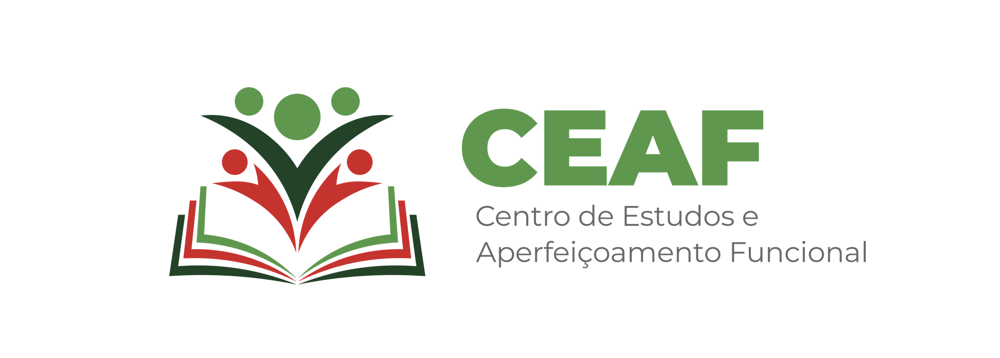
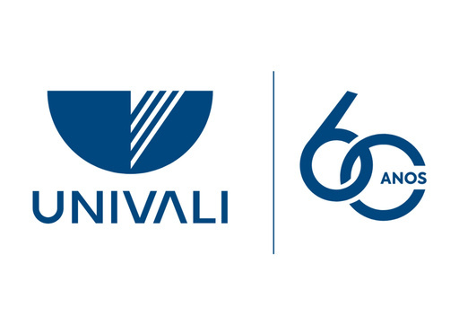

Conferência aberta
A palestra "As Regras Não Escritas da Corrupção" apresenta uma leitura sistêmica do fenômeno da corrupção, seguida de uma roda de conversas com pesquisadores e operadores do direito.
CEAF · Centro de Estudos e Aperfeiçoamento Funcional
Estratégias de prevenção e enfrentamento da corrupção

Doutor Alberto Vannucci
Universidade de Pisa – Itália
Um só dia, duas programações complementares sobre corrupção sistêmica e crime organizado.
A palestra "As Regras Não Escritas da Corrupção" apresenta uma leitura sistêmica do fenômeno da corrupção, seguida de uma roda de conversas com pesquisadores e operadores do direito.
"Corrupção e Crime Organizado: da corrupção sistêmica à mobilização social", ministrado pelo professor Alberto Vannucci, aborda o fenômeno sistêmico e a mobilização social necessária para superá-lo, encerrando com uma mesa de diálogos.
Universidade de Pisa — Itália
Referência internacional nos estudos sobre corrupção sistêmica, dedica parte de sua pesquisa à análise da Operação Mãos Limpas (Mani Pulite) e às dinâmicas institucionais que sustentam e reproduzem práticas corruptas ao longo do tempo.
Conduz as duas atividades do dia: a conferência da manhã e o workshop da tarde, este último com dois módulos temáticos e uma mesa de diálogos.
11 de setembro de 2026 · Auditório do MPSC
Com o professor Alberto Vannucci, seguida de roda de conversas com pesquisadores e operadores do direito.
Workshop — Corrupção e Crime Organizado: da corrupção sistêmica à mobilização social
Da experiência italiana às novas formas de corrupção
Limites do combate à corrupção e o papel da sociedade civil
Pesquisadores e operadores do direito na roda de conversas da manhã.

Professor
Coordenador PPCJ/UNIVALI

Professor
Coordenador do Curso de Direito – Itajaí/UNIVALI

Procurador de Justiça
Coordenador de Recursos Cíveis do MPSC

Presidente do Círculo Ítalo-Brasileiro de Santa Catarina

Advogado
Presidente da Câmara Italiana de Indústria e Comércio de SC
Comunidade acadêmica, estudantes de graduação e todos os interessados no tema.
Estudantes de pós-graduação, mestrado e doutorado, e promotores e procuradores de justiça — presentes na atividade da manhã ou já com conhecimento prévio sobre o tema.
Garanta sua vaga na conferência da manhã e no workshop da tarde. As inscrições são gratuitas e feitas pelo portal EAD do MPSC.
Inscrever-se em ead.mpsc.mp.brAponte a câmera do celular
Realização e apoio

